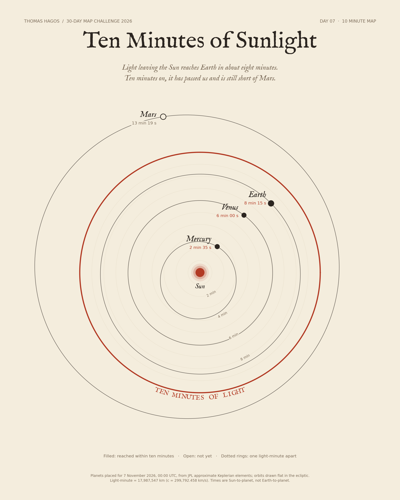

30-Day Map Challenge / Day 07 / 10 minute map
Ten Minutes of Sunlight
Light leaving the Sun reaches Earth in about eight minutes. Ten minutes on, it has passed us and is still short of Mars.

Sun to planet, 7 November 2026
| Mercury | 2 min 35 s |
| Venus | 6 min 00 s |
| Earth | 8 min 15 s |
| Mars | 13 min 19 s |
Positions from JPL approximate Keplerian elements (Standish), orbits drawn flat in the ecliptic. One light-minute is 17,987,547 km. Code and method.